Case Study: DCSync via AD Replication (T1003.006)¶
Goal: Demonstrate an end-to-end SOC workflow in my homelab — detection, escalation to case, investigation pivots, containment, and tuning.
Executive summary¶
An alert fired for Active Directory replication activity performed by a non-machine account, consistent with DCSync (MITRE ATT&CK T1003.006).
DCSync abuses legitimate AD replication APIs to request credential material, effectively simulating a domain controller replication request.
- Detection: Custom Sigma rule (“Active Directory Replication from Non Machine Account”)
- Primary signal: Windows Security Event ID 4662 on the Domain Controller, with replication-right GUIDs present
- Action: Escalated alert into an Elastic Security Case, documented triage, and performed pivots to identify the initiating account and source host
- Outcome: Containment actions + rule-tuning notes captured for future hardening
MITRE mapping - T1003.006 – OS Credential Dumping: DCSync
Lab environment (relevant assets)¶
This case occurred inside my isolated SOC homelab network:
- Security Onion: Fleet + Kibana (Elastic Security), Zeek, Suricata
See:../vm/security-onion.md - Domain Controller:
WIN-LLBIAPV2E9D.lab.local(192.168.25.137) — AD DS/DNS, Sysmon + Elastic Agent
See:../vm/dc.md - Workstation:
Workstation-A.lab.local(192.168.25.141) — Sysmon + Elastic Agent
See:../vm/workstation.md - Topology overview:
../topology.md
Detection logic (what fired)¶
Why Event ID 4662 matters¶
On Domain Controllers, Event ID 4662 (“An operation was performed on an object”) can record directory service access events when auditing/SACLs are configured. Replication-related access can be identified by specific “control access right” GUIDs.
Replication GUIDs commonly associated with DCSync¶
These GUIDs are frequently used to identify replication rights in logs:
- DS-Replication-Get-Changes —
1131f6aa-9c07-11d1-f79f-00c04fc2dcd2 - DS-Replication-Get-Changes-All —
1131f6ad-9c07-11d1-f79f-00c04fc2dcd2 - DS-Replication-Get-Changes-In-Filtered-Set —
89e95b76-444d-4c62-991a-0facbeda640c
Where the rule lives in this project¶
Full rule + writeup: Detections → Active Directory
- ../detections/AD.md
High-level logic:
- Look for event.code: 4662
- ObjectServer: DS
- Properties contains replication GUID(s)
- Exclude replication performed by the DC machine account (*$)
Case management workflow (Elastic Security)¶
1) Escalate alert to a case¶
From Security → Alerts, I escalated the alert (“Active Directory Replication from Non Machine Account”) into a new case.
{kind=link}
2) Triage notes in the case¶
In the case Comments tab, I captured: - suspected technique (T1003.006) - impacted asset (DC) - initiating identity (user/service account) - immediate pivots performed - containment decision
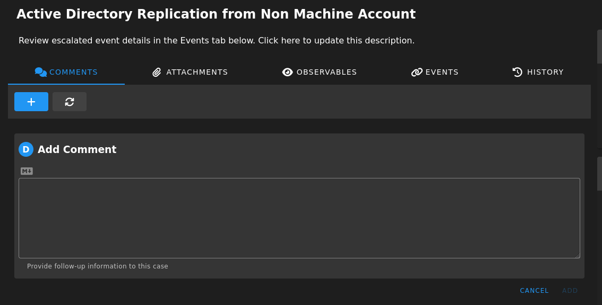 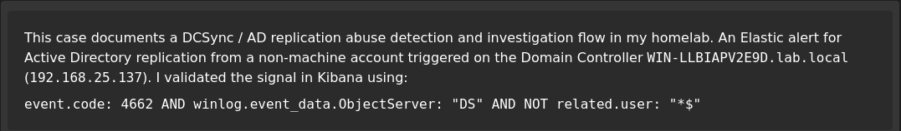 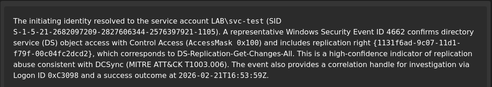 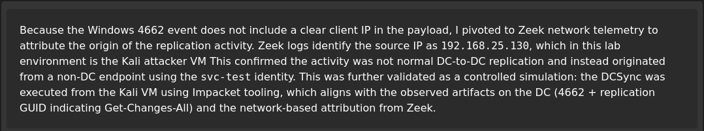 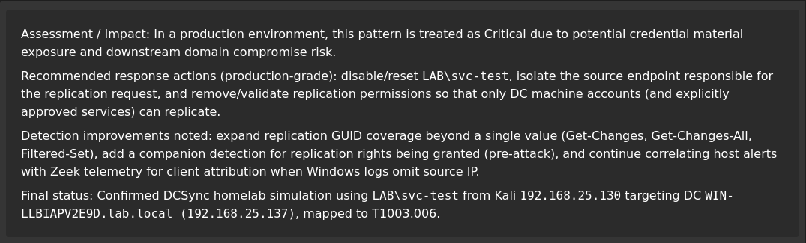
{kind=link}
{kind=link}
{kind=link}
{kind=link}
{kind=link}
3) Observables¶
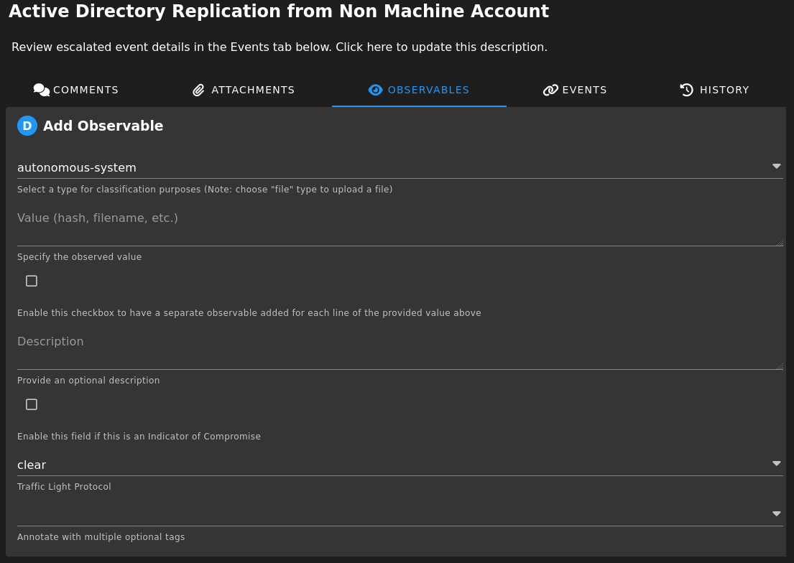 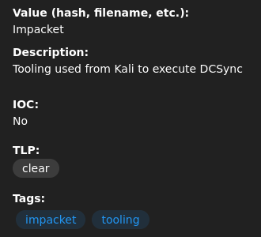 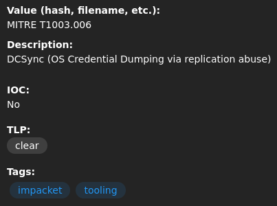 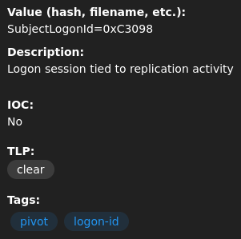 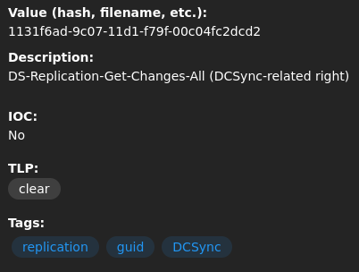 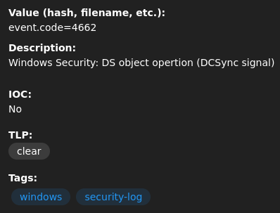 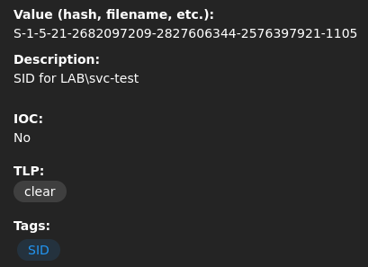 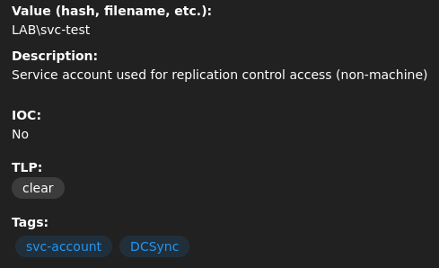 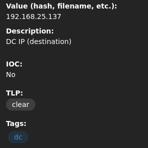 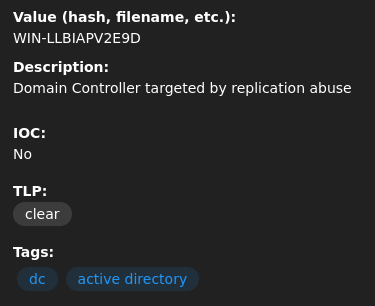 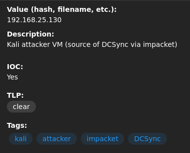
{kind=link}
{kind=link}
{kind=link}
{kind=link}
{kind=link}
{kind=link}
{kind=link}
{kind=link}
{kind=link}
{kind=link}
{kind=link}
Triage: what I validated first¶
Key questions¶
- Is the initiating account expected to replicate?
- DCs normally replicate (machine accounts end with
$) - Non-machine accounts replicating is high-risk
- Where did the replication request come from?
- Which host/user initiated it?
- Is there preceding activity that explains access?
- suspicious logons, privilege assignment, group membership changes
Fast pivots (KQL examples)¶
Replication event slice
event.code: 4662 and winlog.event_data.ObjectServer: "DS"